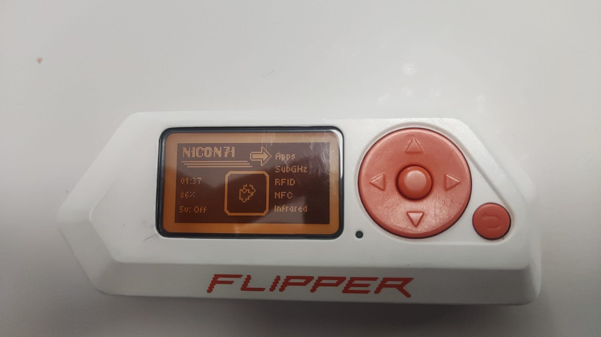

Using Flipper Zero
First of all, what is a Flipper Zero?
Flipper Zero is a device which contains lots of modules for different things oriented for pentesting. It´s based on Linux
and is able to edit, modify and add new things and functions.

Some of the functions it has are:
-
SubGhz: For long and short signal scan, clone and emulation. It means that is able to play signals to access
different systems, such as garage doors, fences or even cars.
-
NFC and RFID: Which are short signals transmitted by specific items, systems or devices, like phones, door
readers, amiibos, etc. that can be also copied and emulated.
-
GPIO: General Purposes Input/Output, which is a set of pins Flipper Zero has on it´s above and allows
the device to interact with different cardboards, such a Wifi Cardboard or GPS modules, radio modules, etc.
It also allows to create social engineering traps (which, I recall, its not allowed and as ethical hacker,
we must fight against)
-
Infrared: It is a short-ranged signal that is used for devices like TV, AC, and different electronics.
Similar a remote.
What have I been using it for?
In despite it can be used for lots of evil ways, and I admit I have been curious about how it works in controlled
environments, it also can be used for good things.
-
It can be used as a safe wallet, saving your credit card credencials and encrypting them.
-
A understimated use for it is as a key cloner, due to it has lots of uses for emergency uses.
In my case, because of my job, I had used it to open a car door, because there was a child inside
and the weather was sunny and warm with a temperature over 38 degrees, and child was asking for help.
With this device it was safe to open the car without breaking any glass and child was safe of being cut
by it.
-
In Spain we´ve been witnessed a great blackout for an entire day, collapsing all kind of services and
streets getting into fear, without lights, communications, or networks. Flipper Zero has a module which can
be added to GPIO and its purpose is to add a radio plenty working into the device, allowing to communicate
on a short or long ranged with other radios.
-
I´ve been adding another functions for the device and been working on my own.